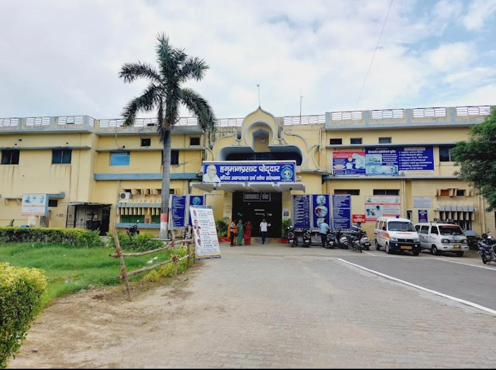
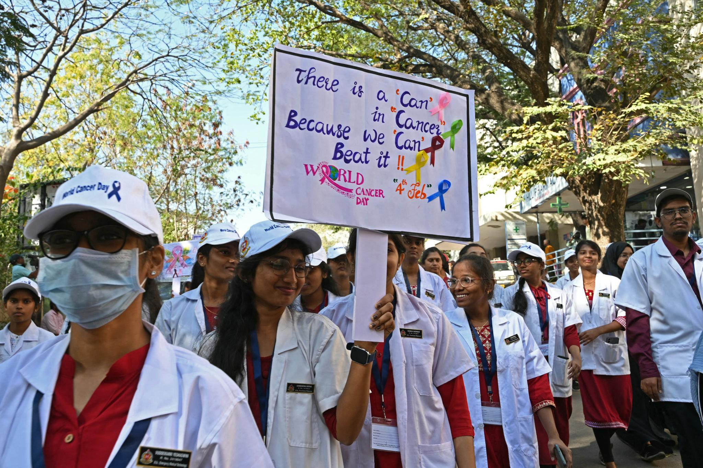
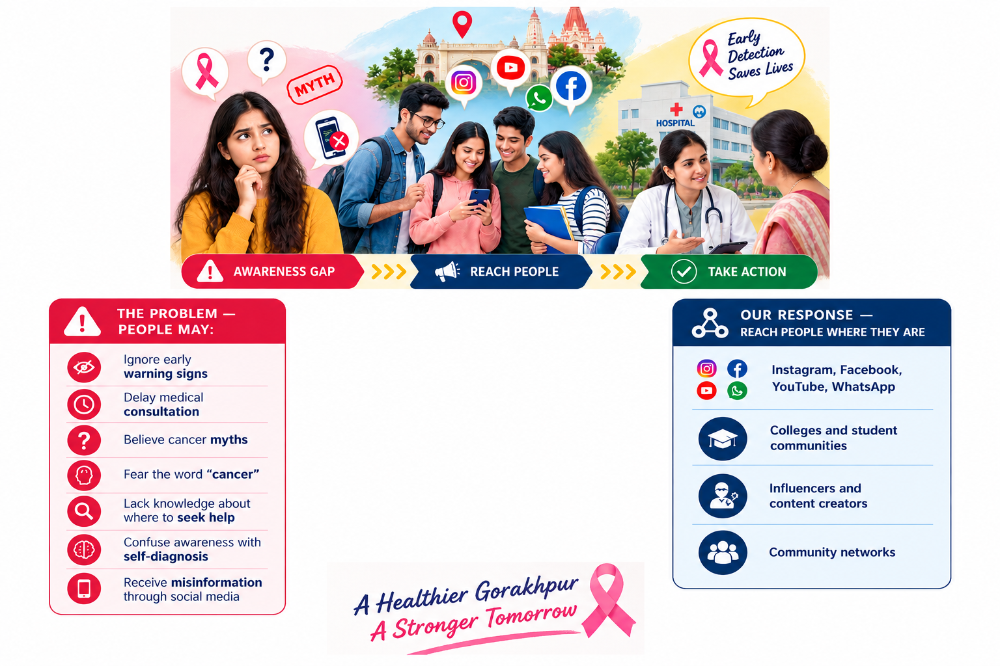
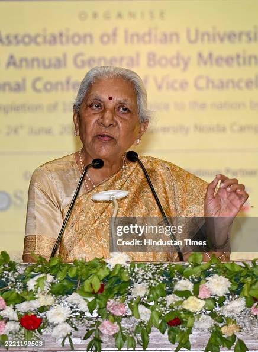
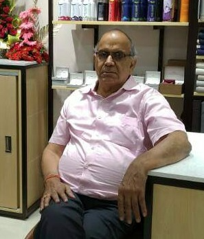
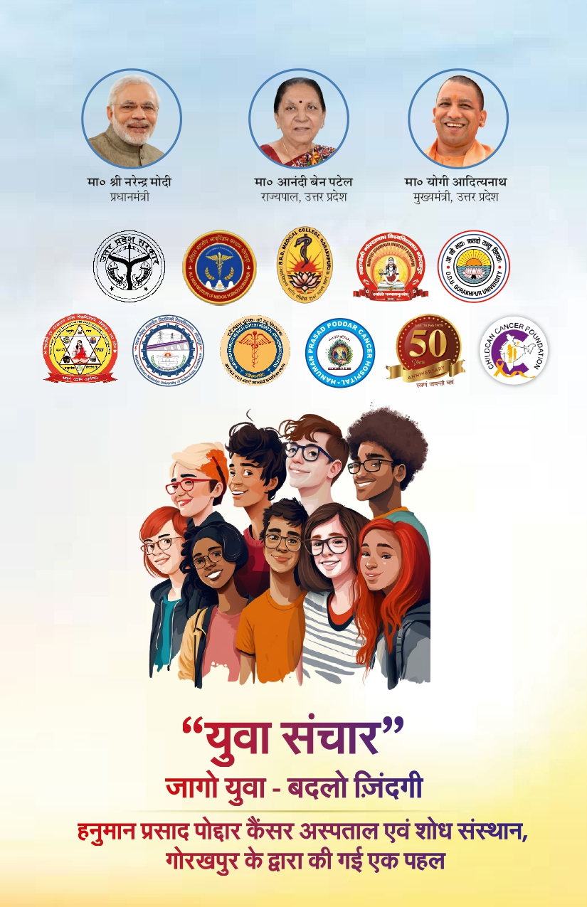
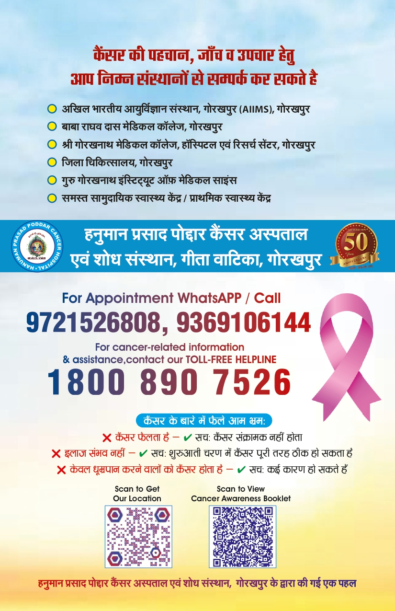

A community-led digital & social movement organized by Hanuman Prasad Poddar Cancer Hospital & Research Institute to empower 330,000+ students, youth creators, and citizens across Eastern Uttar Pradesh with life-saving early cancer detection knowledge.
Years of Healing (Estd. 1975)
Target Youth & Student Reach
Annual New Cancer Patients Served

Hanuman Prasad Poddar Cancer Hospital & Research Institute (HPPCHRI) is Gorakhpur's premier dedicated cancer care institution, established in 1975 at Gita Vatika. Serving 13+ districts of Eastern Uttar Pradesh, Bihar, and adjoining Nepal with comprehensive cancer diagnostics, radiation therapy, surgery, and compassionate palliative care.
Operating since 1975 with expanding patient volumes (over 5,000 new cancer patients annually). NABH-accredited and HBCR-reporting since 2022.
Subsidized cancer chemotherapy medicines, affordable attendant accommodations, and cashless treatment under Ayushman Bharat PM-JAY and CM Relief Fund.
Strong regional outreach through free screening camps in schools and rural communities, HPV vaccination drives, and cancer awareness workshops.
The institution is named in sacred memory of Bhaiji Shri Hanuman Prasad Poddar Ji, the venerable spiritual luminary and literary architect associated with Gita Press, Gorakhpur. His timeless ideals of service, compassion, and welfare continue to inspire HPPCHRI's medical mission.
Seva of Artnarayan • Compassion in Action
Cancer awareness saves lives — not by promising cures, but by moving citizens from silence to timely action. The core principle of our campaign is "Accuracy Before Virality".
Inauguration: October 7, 2026 (Bhaiji Jayanti)
Grand Finale: February 4, 2027 (World Cancer Day)
A 120-day high-visibility awareness campaign mobilizing colleges, schools, clubs, and youth digital creators.
HPPCHRI acts as the community facilitator of awareness — not the only destination promoted for screening. We encourage citizens to seek evaluation at any qualified medical center.
All campaign content is anchored in the verified Yuva Sanchar booklet, curated jointly by medical oncologists, AIIMS Gorakhpur faculty, and health educators.

A collaborative drive involving healthcare institutions, university students, and community volunteer clubs achieved a transformative boost in early cancer consultations before symptoms advanced.

A structured community screening effort focused on Stage 1–2 diagnosis demonstrated that regular check-ups and consistent follow-ups catch cancer when therapeutic options are strongest.
Empower yourself with evidence-based oncology knowledge excerpted from the official Yuva Sanchar booklet. Explore symptom checklists, self-assessments, and prevention guidelines.
हर तीन में से एक व्यक्ति किसी न किसी रूप में तंबाकू (गुटखा, खैनी, सिगरेट, बीड़ी) का सेवन करता है। तंबाकू शरीर के लगभग सभी अंगों — विशेषकर मुंह, फेफड़े, भोजन नली, और मूत्राशय — में कैंसर का सबसे बड़ा कारण है।
अपनी निकोटीन निर्भरता की जांच के लिए नीचे दिए गए प्रश्नों के उत्तर दें:
मुंह के किसी हिस्से (जीभ, गाल, तालू, जबड़ा, होंठ) में होने वाला कैंसर भारत में पुरुषों में सर्वाधिक पाए जाने वाले कैंसरों में से एक है। शीघ्र पहचान होने पर मुख कैंसर का 90% तक सफल इलाज संभव है।
महिलाओं में होने वाले सभी कैंसरों में से लगभग 27% स्तन कैंसर होते हैं। शहरी क्षेत्रों में 22 में से 1 और ग्रामीण क्षेत्रों में 60 में से 1 महिला अपने जीवनकाल में इससे प्रभावित होती है।
सर्वाइकल कैंसर दुनिया का एकमात्र ऐसा कैंसर है जिसे टीकाकरण (HPV Vaccine) और नियमित पैप स्मीयर (Pap Smear) जांच द्वारा लगभग 90%+ तक रोका जा सकता है!
ये लक्षण दिखने का अर्थ स्वतः कैंसर होना नहीं है, किंतु यदि इनमें से कोई भी लक्षण 2-3 सप्ताह से अधिक बना रहे, तो योग्य चिकित्सक से तुरंत जांच करवाएं।
बिना किसी प्रयास या डाइट के तेजी से 4–5 किलो वजन घट जाना।
शरीर में, स्तन में, गर्दन या बगल में कोई सख्त गांठ या सूजन।
खांसी में खून, मल-मूत्र में खून या अस्वाभाविक योनि स्राव।
3 सप्ताह से अधिक रहने वाली खांसी या आवाज में स्थायी बदलाव।
लंबे समय तक कब्ज, बार-बार दस्त या पेशाब करने में रुकावट।
मुंह, त्वचा या जननांगों में ऐसा घाव जो दवाओं से भी ठीक न हो।
खाना या पानी गले में अटकना तथा लगातार बदहजमी बने रहना।
Know. Check. Act. Don't Delay. समय पर पहचान ही सबसे बड़ा जीवनदान है।
समाज में व्याप्त भ्रांतियों को तोड़कर सही जानकारी फैलाना ही युवा संचार अभियान का संकल्प है।
कैंसर कोई संक्रामक रोग नहीं है। मरीज के साथ उठने-बैठने, खाना खाने या देखभाल करने से कैंसर कभी नहीं फैलता। उन्हें आपके प्रेम और संबल की आवश्यकता है।
शुरुआती चरण (Stage 1 & 2) में पता चलने पर अधिकांश कैंसर पूरी तरह ठीक हो जाते हैं। आधुनिक ट्रू-बीम रेडिएशन, सर्जरी और टार्गेटेड थेरेपी ने कैंसर को एक साध्य बीमारी बना दिया है।
तंबाकू एक प्रमुख कारक अवश्य है, किंतु कैंसर जेनेटिक्स, मोटापा, असंतुलित जीवनशैली, प्रदूषण, और वायरल संक्रमण (जैसे HPV, हेपेटाइटिस) से भी हो सकता है।
युवा संचार पुस्तिका में युवाओं के स्वास्थ्य के साथ-साथ डिजिटल सुरक्षा पर भी विशेष मार्गदर्शन दिया गया है। ऑनलाइन फ्रॉड, डिजिटल अरेस्ट और लोन ऐप धोखाधड़ी से स्वयं को सुरक्षित रखें।
राष्ट्रीय साइबर अपराध रिपोर्टिंग पोर्टल: cybercrime.gov.in
Register to receive your Official Digital Participation Delegate Pass, participate in awareness competitions, and join Gorakhpur's fight against cancer.
Cancer se Jung, Gorakhpur ke Sang — Golden Jubilee 2026–27
Save or print your delegate card. Present this pass during campus awareness drives and award ceremonies.
Rooted in the official "Top 1% Selection & Recognition Model" (Slide 16), HPPCHRI celebrates top awareness ambassadors across schools, colleges, community clubs, and digital creators.
1. Register on this portal before posting. •
2. Tag our official hospital handle (@hppcancerhospital / @hppchri). •
3. Use the official hashtags: #YuvaSanchar #HPPCHRI50 #KnowCheckAct.
Providing world-class radiation, surgical, and medical oncology under one roof at Gita Vatika, Gorakhpur.
High-energy TrueBeam Linac delivering sub-millimeter precision radiotherapy, stereotactic body radiation (SBRT), and RapidArc with minimal damage to healthy surrounding tissues.
Equipped with state-of-the-art intensity modulated radiation therapy (IMRT), 3D conformal radiotherapy, Cobalt teletherapy, and high-dose-rate (HDR) brachytherapy for gynecological cancers.
Comprehensive chemotherapy protocols, targeted therapy, immunotherapy, and biological therapy administered by experienced medical oncologists with subsidized medicine pricing.
Specialized head & neck onco-surgery, breast onco-plastic surgery, gastrointestinal cancer resections, and reconstructive surgery conducted in advanced modular operation theaters.
Dedicated high-slice CT Scan, Digital Mammography, Colour Doppler Ultrasound, Digital X-Ray, and fully equipped Pathology & Histopathology laboratory for prompt diagnosis.
Dedicated pain management, symptom relief, 24×7 ambulance service, and affordable accommodation facilities for patient attendants traveling from rural UP, Bihar, and Nepal.
Hon'ble constitutional and state leaders commend HPPCHRI's Golden Jubilee cancer awareness initiative and the youth-led "Yuva Sanchar" movement.

For institutional tie-ups, campus awareness kits, or drive coordination, please connect directly with our campaign secretarial team.



तंबाकू, एनीमिया, मासिक धर्म स्वच्छता, मुख व स्तन कैंसर जांच और साइबर सुरक्षा पर व्यावहारिक मार्गदर्शिका।